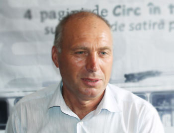

Primăria
| Date | Succese | Ordine | Contacte |

Primarul satului
☏ Telefon: 078912345
✉ Email: grigoreplesca@gmail.com
Date generale
La 1 ianuarie 2023, în satul Visoca locuiau 1650 de cetățeni. Fondul funciar al Primăriei cuprinde 4.111 ha: *2.436 ha — pământ arabil, *168 ha — livezi, *570 ha — pășune, *406 ha — păduri.
Află mai mult
Anunțuri
- 12.03.24
Echpa de juniori a satului obținut locul 3 la competițiile internaționale la fotbal de la Iași, România, felicitări. - 22.03.24
data de 1 septembrie în Casa de Cultură va avea loc concertul închinat începutului anului școlar. Vă așteptăm cu drag. - 01.04.24
Locuitorii satului Visoca ce au nevoie de lemne, vă adresați la primărie pentru a fi întroduși în listă. - 27.04.24
Toți cetățenii sunt rugați să vină la asistentul social pentru completarea fișelor pentru acordarea compensațiilor. - 03.05.24
Tinerii care doresc să-și deschidă o afacere! Veniți împreună să aplicăm proiecte, să câștigăm granturi. - 19.05.24
Primăria anunță colectarea de fonduri pentru contribuția la proiectul drumului în localitate. - 07.06.24
Primăria vă invită să activați la fabrica de coasere a huselor pentru automobile din Soroca ce și-a deschis filiala pe teritoriul satului. Sunt locuri vacante.